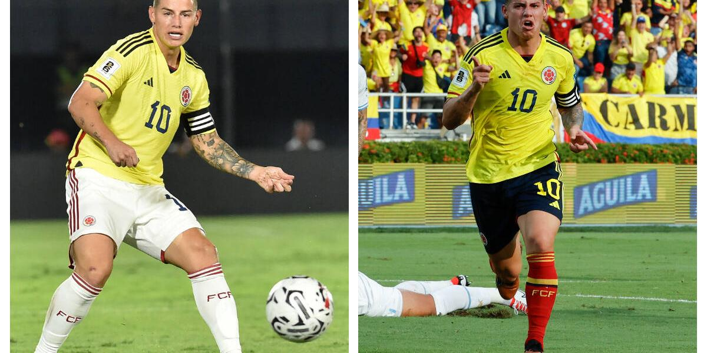
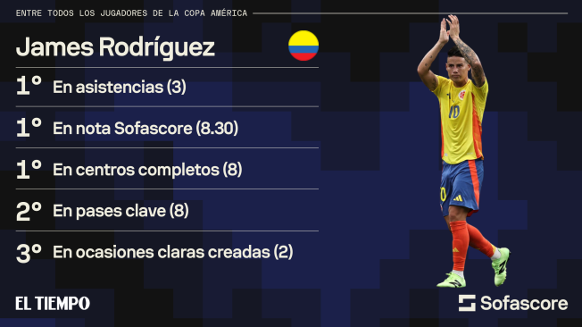

Noticias Recientes
Primer objetivo ✅🇨🇴 pic.twitter.com/ILYDaYWlRC
— James Rodríguez (@jamesdrodriguez) July 3, 2024
James Rodríguez en la Copa América
James Rodríguez es sin duda uno de los mejores jugadores de lo que va de la Copa América 2024, incluso para muchos fue el número uno de la fase de grupos. El ‘10’ ha salido como figura en los tres partidos aportando asistencias y buen juego para la Selección Colombia, ahora varios equipos lo volvieron a poner en el radar de cara al mercado de pases.
Trayectoria y Logros
James Rodríguez ha tenido una destacada carrera en el fútbol internacional. Desde su debut con el Envigado FC en Colombia, ha jugado en varios clubes de renombre como el FC Porto, AS Monaco, Real Madrid, Bayern Múnich y Everton. Entre sus logros más importantes se encuentran:
- Máximo goleador de la Copa Mundial de la FIFA 2014.
- Ganador de la Liga de Campeones de la UEFA con el Real Madrid.
- Campeón de la Bundesliga con el Bayern Múnich.
- Reconocido como uno de los mejores jugadores jóvenes en Europa durante su tiempo en el AS Monaco.
Estadísticas en la Copa América 2024
En la Copa América 2024, James ha demostrado su habilidad y liderazgo en el campo. Aquí algunas de sus estadísticas destacadas:
- Partidos jugados: 3
- Asistencias: 4
- Goles: 2
- Pases completados: 87%
Impacto y Futuro
James Rodríguez no solo ha sido crucial para el éxito de Colombia en la Copa América, sino que también ha atraído la atención de varios clubes europeos que están interesados en ficharlo para la próxima temporada. Su habilidad para crear oportunidades y su experiencia en competencias internacionales lo hacen un jugador valioso para cualquier equipo.